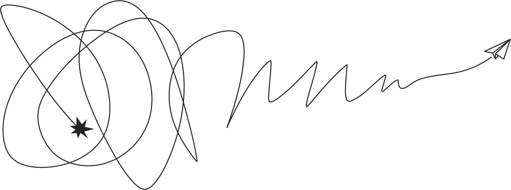
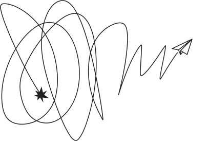
1 Исследую пользователей и предметную область, помогаю уточнить идею проекта и сформулировать видение.
2 Придумываю концепты дизайна, проектирую MVP, помогаю запустить продукт.
3 Собираю обратную связь, шаг за шагом улучшаю дизайн, сопровождаю разработку.
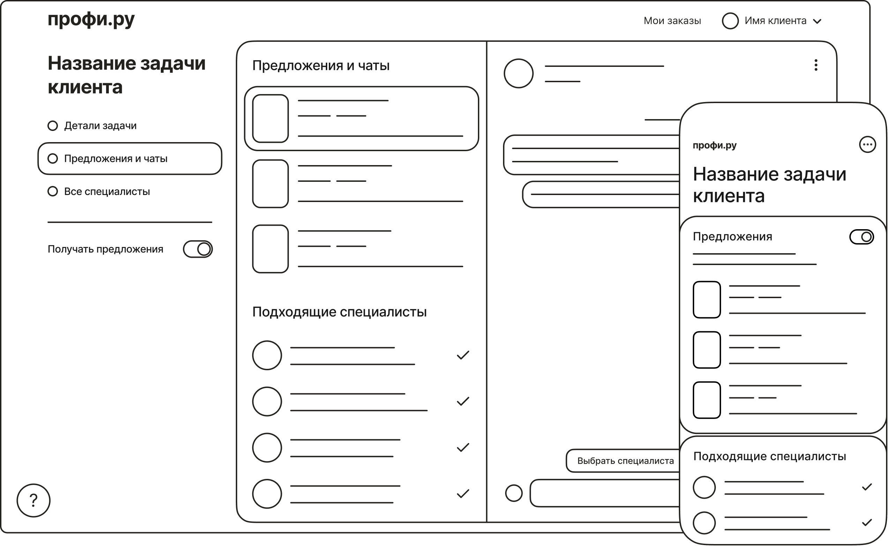
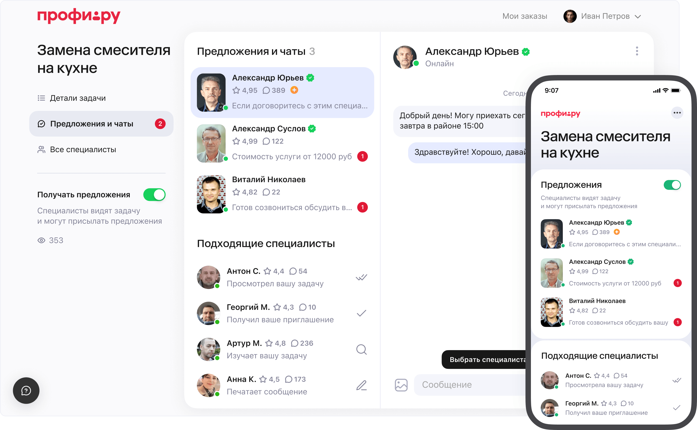
Заказ услуги — ключевая часть клиентского опыта на Профи.ру. Именно здесь решается, получится ли клиенту найти подходящего специалиста, состоится ли сделка.
Я сделал редизайн интерфейсов заказа для веб-версии сервиса. В результате клиенты стали выбирать специалистов на 12% чаще, а количество состоявшихся сделок увеличилось на 5%.
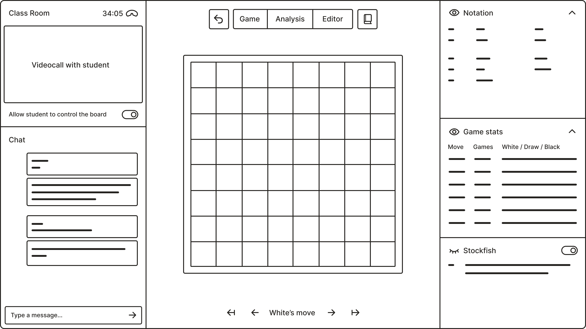
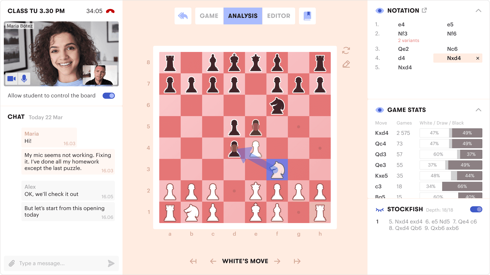
С чего начать создание национальной шахматной платформы? Такой вопрос поставили перед нашей командой в Лаборатории Касперского.
Проведя серию исследований, мы предложили начать с сервиса онлайн-обучения, спроектировали и протестировали его концепт.
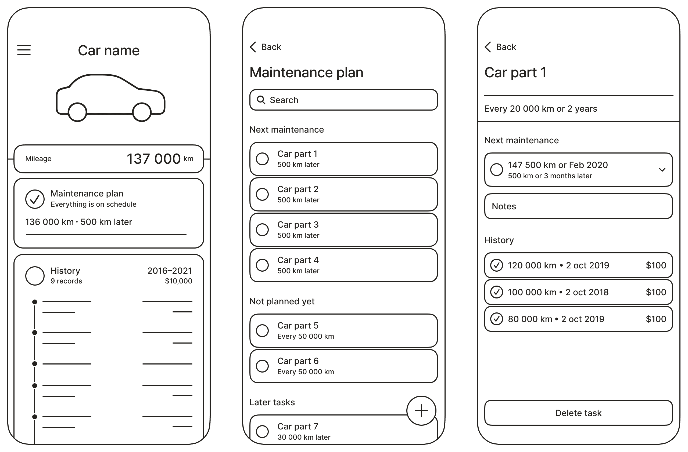
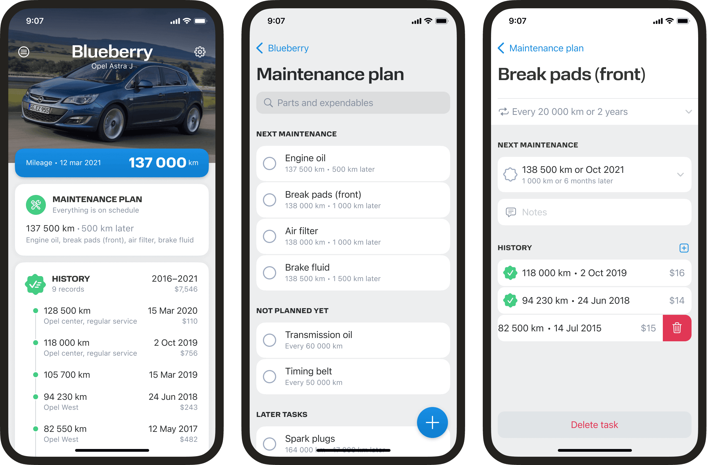
Старые автомобили могут служить своим владельцам десятилетиями, если их правильно обслуживать. Мы придумали приложение, которое помогает справиться с этой задачей.
Приложение позволяет автовладельцам вести учёт работ по своей машине и создаёт план на будущее, подсказывая пользователю, что нужно обслуживать в следующий раз.
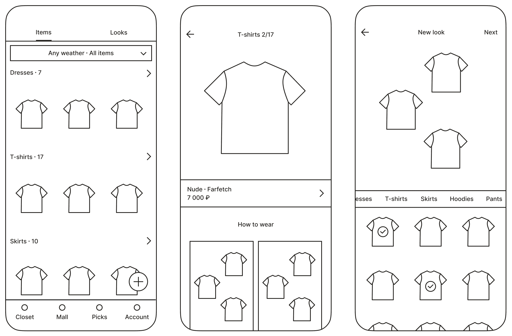
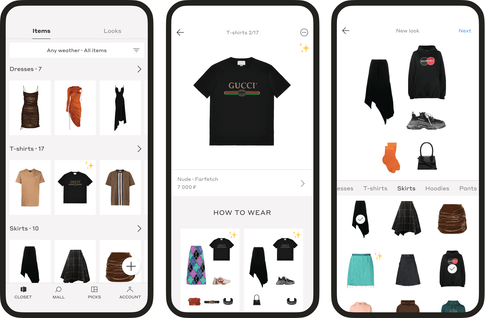
Выбор одежды на каждый день — непростая задача, особенно для женщин. В инкубаторе skl.vc мы создали инструмент, который помогает её решить.
Приложение позволяет оцифровать свой гардероб, упорядочить его и перейти от хаотичного ежедневного выбора одежды к осознанному управлению своим внешним видом.
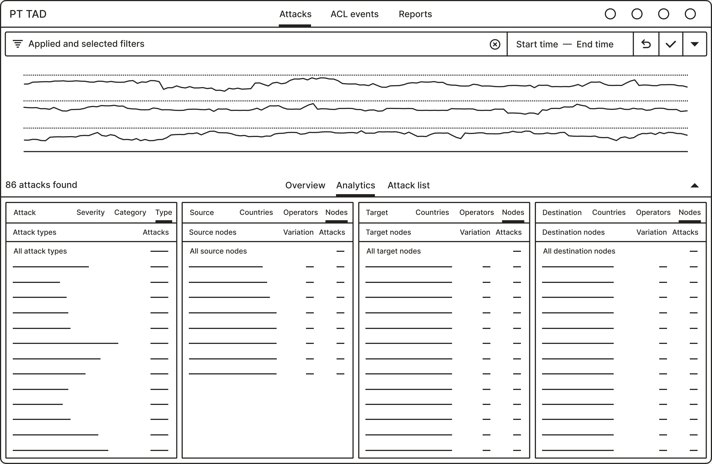
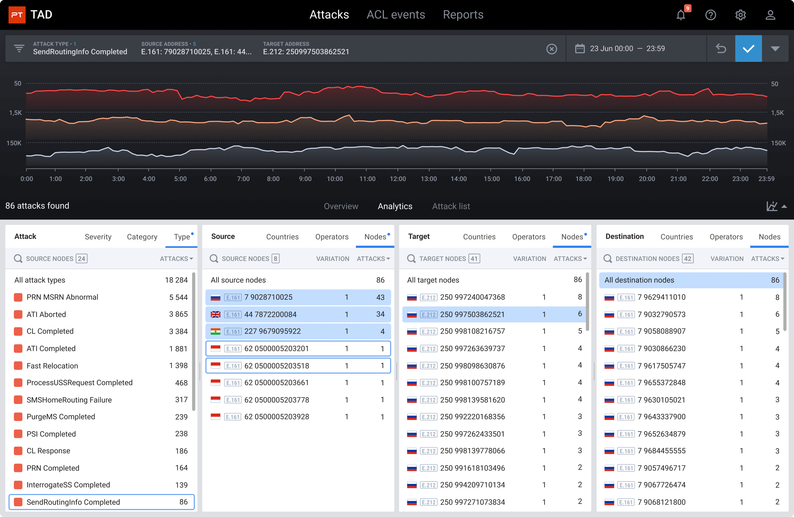
Positive Technologies TAD позволяет сотовым операторам отслеживать атаки в сигнальных сетях и защищаться от них.
Я разработал новую версию веб-интерфейса системы, упрощающую специалистам работу с атаками.
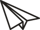
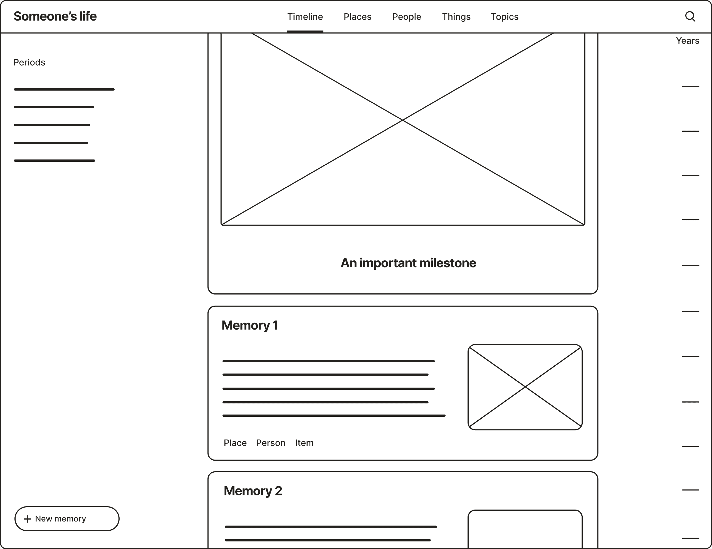
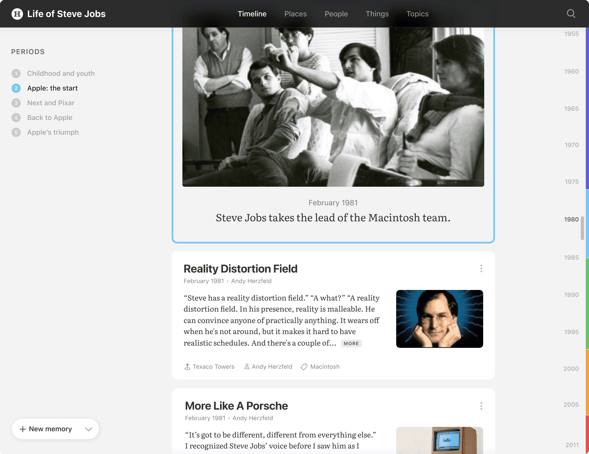
Начав собирать семейные воспоминания, я быстро столкнулся с тем, что их сложно организовать. Так появилась идея сервиса, который бы помог с этой задачей.
Я провёл интервью с людьми, которые интересуются семейной историей и спроектировал демо-версию сервиса. В фейк-дор тесте 10% посетителей оставили свой e-mail.
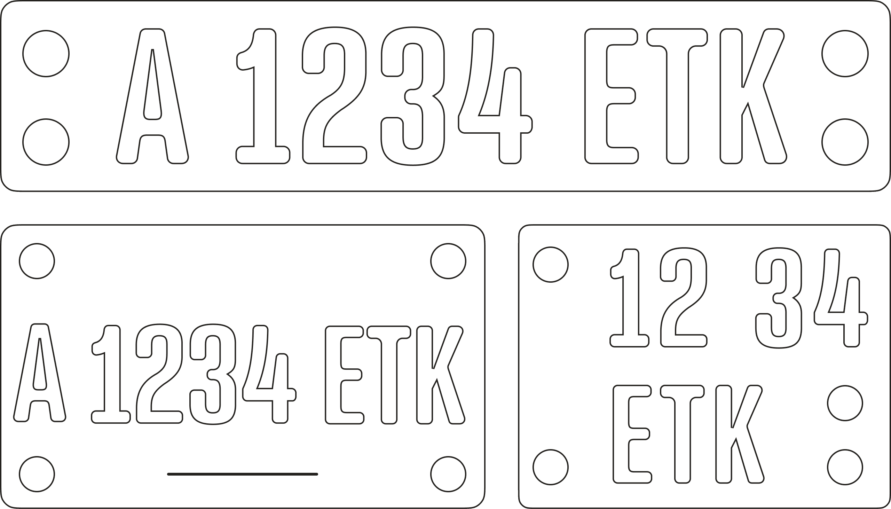
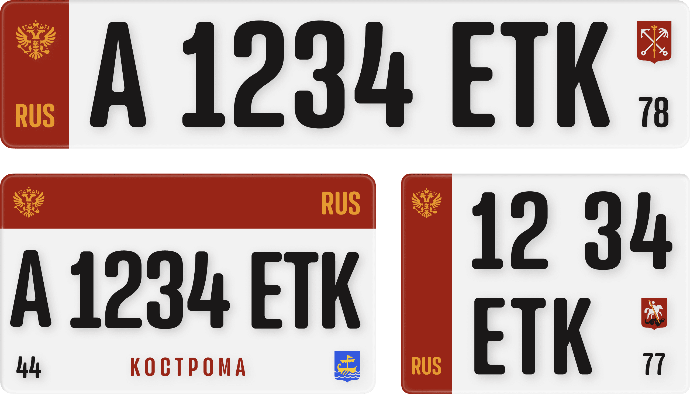
Современный стандарт российских автомобильных знаков был принят в 1993 году. После 30 лет использования он заслуживает редизайна, который бы устранил его ограничения и недостатки.
В этом исследовании я анализирую накопившиеся проблемы стандарта и предлагаю новый вариант.